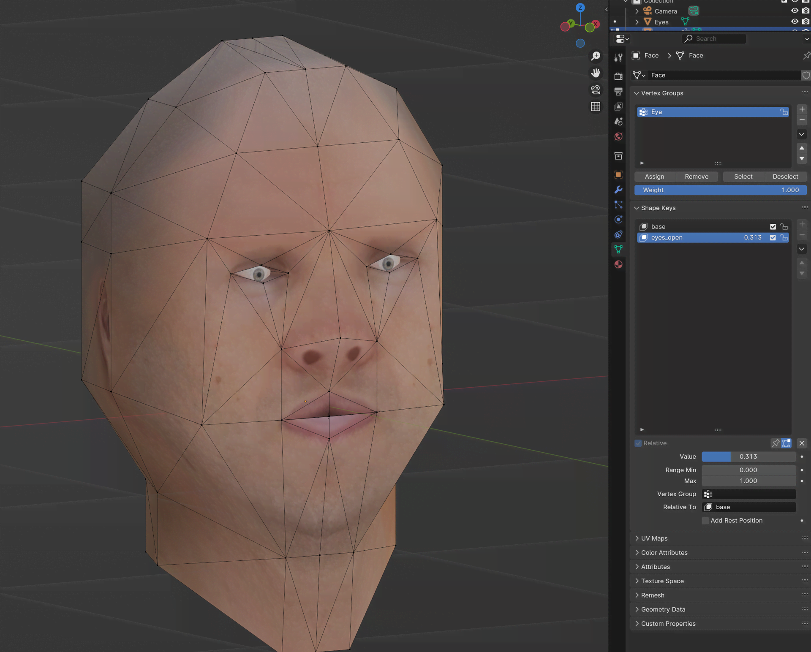

Morph Target: Eyes
Sep 17, 2024
First Time Implementing Morph Targets
Today I implemented morph targets for the first time using C++ and OpenGL 4.1.
To get into the topic I made a super simple setup in Blender containing of just a few vertices and a single morph target: eyes
I then imported the model using cgltf and used the morph vertex positions as a vertex a attribute.
Live Demo
Besides desktop with OpenGL I also did a quick wasm / WebGL build via emscripten. Here's a playable live demo running in the browser:
Controls
Morph Target Blend = A / D
Camera Zoom = W / S
Camera Up / down = Q / E
Orbit Camera = Up / Down / Right / Left Arrow Keys / Left Mouse Drag
(Click once to focus the widget, keyboard input won't work without focus)
There's also a fullscreen version